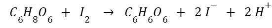

Step 1 | Vitamin C Titration Experiment
1. Objective
The purpose of this experiment was to detect different amounts of vitamin C in several solutions and compare them. By adding iodine solution to lemonade, orange juice, and a prepared vitamin C solution, we were able to observe the color changes with starch as an indicator. The time it took for each solution to show a visible color change was used to compare their vitamin C concentrations.
2. Hypothesis
The solutions are expected to contain different amounts of vitamin C, with lemonade having the least, orange juice containing more, and the prepared vitamin C solution containing the most. Accordingly, it is predicted that the color change in the iodine–starch test will occur first in the solution with the least vitamin C and last in the solution with the most.
3. Background / Introduction
Vitamin C (ascorbic acid, C₆H₈O₆) is oxidized by free iodine molecules according to the following redox reaction.

In this reaction, ascorbic acid acts as a strong reducing agent and is oxidized to dehydroascorbic acid (C₆H₆O₆), while iodine is reduced to iodide ions (I⁻).
Iodine solution has a natural brown color, but when vitamin C is present, iodine reacts with it first, removing iodine from solution. As a result, no visible color change occurs at this stage. Once all the vitamin C has been consumed, the remaining iodine reacts with starch, forming a dark blue starch–triiodide (I₃⁻) comp1lex. Therefore, the blue color only appears after vitamin C is fully oxidized.
The main chemical concept in this experiment is the oxidation–reduction (redox) reaction between vitamin C and iodine, not a neutralization reaction. Starch functions solely as an indicator that makes the endpoint visible through a distinct color change.
In conclusion, the faster the dark blue color appears, the lower the concentration of vitamin C in the sample. If more iodine is required before the color change occurs, the vitamin C concentration is higher.
Redox Chemistry
Redox reactions involve the transfer of electrons from one species to another. Oxidation is the loss of electrons, while reduction is the gain of electrons. C₆H₈O₆ is a strong reducing agent, losing electrons to iodine, which is reduced to iodide.
Vitamin C
Vitamin C is a water-soluble vitamin essential for human health. It protects cells from damage as an antioxidant and supports various body functions, including the immune system.
Iodine (I₂)
Iodine is a diatomic molecule. It appears almost black as a solid, and when vaporized by heat, it turns violet.
Starch
Starch is a polysaccharide composed of long chains of glucose molecules stored by plants. It contains two main polymers: amylose and amylopectin.
4. Materials/ Equipment
Supplies:
Iodine solution
Starch solution
Vitamin C powder
Lemonade
Vitamin drink
Orange juice
Beakers
Droppers
Glass rods
The main ingredients for the experiment are iodine and starch solutions. Iodine reacts with starch to form a dark blue color, but the presence of vitamin C reduces iodine, turning the solution colorless.
5. Experiment Method & Procedure
Making starch solution:
- Add 0.5 g of starch to 50 mL of distilled water in a beaker.turning
- Starch does not dissolve easily, so heating is necessary.
Preparing the iodine standard solution:
- Dissolve 3 g of KI (Potassium Iodide) and 0.15 g of KIO₃ (Potassium Iodate) in distilled water.
- Transfer the solution to a 250 mL volumetric flask.
- Rinse the beaker with distilled water to collect all contents.
- Add 10 mL of diluted sulfuric acid to the flask.
- Fill to the 250 mL mark with distilled water.
Diluting the vitamin drink:
- Take 10 mL of the vitamin drink and dilute to 100 mL with distilled water.
- Add 8–9 drops of starch indicator to 20 mL of the diluted solution.
- Fill a burette with the iodine standard solution.
Titration procedure:
- Slowly add iodine solution drop by drop from the burette.
- Wait until the solution begins to change to dark blue.
- Pause briefly when a slight color change is observed.
- Once the color change is complete, stop the titration.
- Record the volume of iodine used from the burette.
6. Observatons & Results
The experimenters observed three groups –lemonade, orange juice, and vitamin powder solution– each in amounts of 50 milliliters. Five milliliters of starch solution was added to each group. As the Iodine solution was added, the colors of the solution should have changed. When a drop of iodine was added, only lemonade solution changed its color; after that, more drops of iodine solution were added to solutions except for lemonade. As a result of the observation, lemonade reacted when a single drop of iodine solution was added and orange juice reacted when three to four drops of ionic solution were added. For the vitamin powder solution, the experimenters couldn’t observe any notable change until 4 drops. To measure the amount of iodine solution that is required for the vitamin powder solution to react, several additional drops were added; however, there was no noticeable reaction observed in vitamin c solution even after a total of 30 drops of iodine solutions was added.
7. Analysis / Discussion
As described in conclusion, ionic solution and starch solution occurred the dark blue reaction in the order of lemonade, orange juice, and vitamin powder solution. This result is corresponding to our hypothesis, which also stated that lemonade will lead the least amount and the vitamin powder solution will need the most ionic solution in order to react. As the results are driven from the vitamin’s ability to cause restoration, this result can infer the least amount of vitamin was composed in the lemonade, most amount of vitamin was composed in the vitamin powder solution, and the orange juice has an amount of vitamin composed in between.
The major limitation from the experiment was the substances utilized. For instance, the difference of vitamin composition in the drinks are different in each brand of brinks. Such difference has the possibility to influence the result of the experiment in particular conditions.
In the contents of future replications, ratio of the starch solution could be a meaningful factor to control. Holding the experiment employing a different composition of starch solution is expected to create a notable variation in the result. Moreover, controlling the composition of vitamin powder solution appears to be necessary as there was a large gap of ionic solution demanded for the reaction between lemonade and vitamin powder solution: a single drop to thirty drops, which still was not enough to cause the reaction.
8. Conclusion
The experiment tested three solutions for their reaction with iodine in the starch test. Lemonade changed color first, orange juice changed later, and the vitamin C solution showed no change after thirty drops. This confirms that lemonade had the least vitamin C, orange juice had more, and the vitamin C solution had the most, matching the hypothesis. One issue was the excessive vitamin C powder in the prepared solution, making it different from the drinks. Heating was needed to dissolve starch, which may have affected the test. Overall, the experiment showed clear differences in vitamin C concentration and emphasized the importance of careful preparation.
9. Further Experiment
First of all, we noticed that when iodine is added to starch, it reacts and shows a distinct color change from the original into a deep blue-black. By using this information, we are thinking of conducting a further, more detailed experiment with the extra materials. It’s a relatively similar experiment, but the purpose of it is slightly different; while the previous experiment’s purpose was to compare vitamin titration for each experimental group, this experiment will be comparing the difference between the rate of diffusion of the intense dark blue color formed by the iodine–starch reaction.
To conduct this experiment, first, we should fully mix the three Vitamin C solutions with the starch solution. If a petri dish is present, pour the mixture there, and leave it alone until it becomes completely tranquil. Later, when the mixture is not moving at all, add one careful drop of iodine solution on one part of each solution on the petri dish. To make sure that the experiment is not influenced by chance or an error, the amount of Vitamin C solutions, starch solutions, and iodine solutions should be perfectly identical.
By this experiment, we expect to observe clear differences between the rate of diffusion of the blue-black color for each vitamin–starch mixture. These results will allow us to compare how quickly iodine reacts and spreads through solutions containing different concentrations of Vitamin C. Overall, this experiment will provide us insight into the diffusion process in a visually clear and measurable way, and reinforces our understanding of the actual chemical reactions between iodine and starch.
We conducted an additional experiment. Although it was not part of our original plan, we obtained an interesting result. Using leftover lemonade and iodine solution, we measured how many drops of iodine were needed to turn the lemonade clear. Up to 15 drops, the color became noticeably lighter. We expected the color to continue fading, but from the 16th drop onward, it suddenly changed into a deep purple.
10. References
2.7: Volumetric Titration-Home. (2022, June 26). Chemistry LibreTexts.https://chem.libretexts.org/Courses/Minnesota_State_Community_and_Technical_College/CHEM_1112:_General_Inorganic_Chemistry_II_Lab_Manual-Online_Section/02:_Experiments/2.07:_Volumetric_Titration-Home
“레몬에이드, 비타민 음료, 오렌지주스 중 비타민이 많이 함유된 음료는? / YTN 사이언스.” YouTube, 11 July 2018, www.youtube.com/watch?v=Zvb0KsIX9wA. Accessed 16 Sept. 2025.